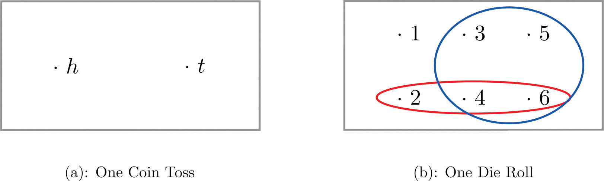
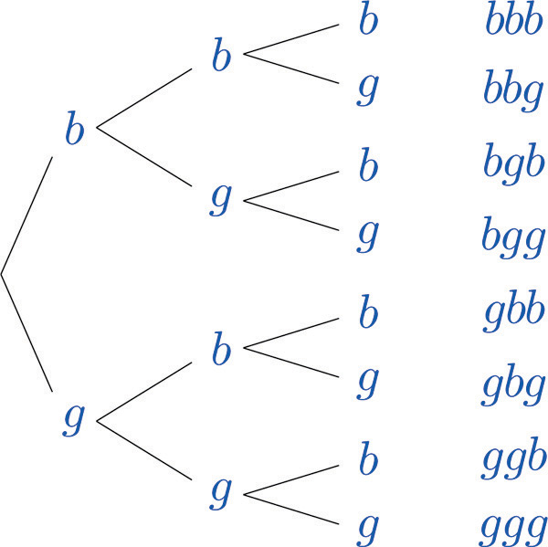
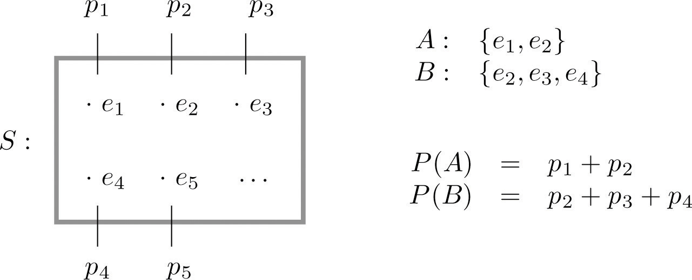

Rolling an ordinary six-sided die is a familiar example of a random experiment, an action for which all possible outcomes can be listed, but for which the actual outcome on any given trial of the experiment cannot be predicted with certainty. In such a situation we wish to assign to each outcome, such as rolling a two, a number, called the probability of the outcome, that indicates how likely it is that the outcome will occur. Similarly, we would like to assign a probability to any event, or collection of outcomes, such as rolling an even number, which indicates how likely it is that the event will occur if the experiment is performed. This section provides a framework for discussing probability problems, using the terms just mentioned.
A random experiment is a mechanism that produces a definite outcome that cannot be predicted with certainty. The sample spaceThe set of all possible outcomes of a random experiment. associated with a random experiment is the set of all possible outcomes. An eventAny set of outcomes. is a subset of the sample space.
An event E is said to occur on a particular trial of the experiment if the outcome observed is an element of the set E.
Construct a sample space for the experiment that consists of tossing a single coin.
Solution:
The outcomes could be labeled h for heads and t for tails. Then the sample space is the set
Construct a sample space for the experiment that consists of rolling a single die. Find the events that correspond to the phrases “an even number is rolled” and “a number greater than two is rolled.”
Solution:
The outcomes could be labeled according to the number of dots on the top face of the die. Then the sample space is the set
The outcomes that are even are 2, 4, and 6, so the event that corresponds to the phrase “an even number is rolled” is the set {2,4,6}, which it is natural to denote by the letter E. We write
Similarly the event that corresponds to the phrase “a number greater than two is rolled” is the set , which we have denoted T.
A graphical representation of a sample space and events is a Venn diagram, as shown in Figure 3.1 "Venn Diagrams for Two Sample Spaces" for Note 3.6 "Example 1" and Note 3.7 "Example 2". In general the sample space S is represented by a rectangle, outcomes by points within the rectangle, and events by ovals that enclose the outcomes that compose them.
Figure 3.1 Venn Diagrams for Two Sample Spaces
A random experiment consists of tossing two coins.
Solution:
A device that can be helpful in identifying all possible outcomes of a random experiment, particularly one that can be viewed as proceeding in stages, is what is called a tree diagram. It is described in the following example.
Construct a sample space that describes all three-child families according to the genders of the children with respect to birth order.
Solution:
Two of the outcomes are “two boys then a girl,” which we might denote , and “a girl then two boys,” which we would denote Clearly there are many outcomes, and when we try to list all of them it could be difficult to be sure that we have found them all unless we proceed systematically. The tree diagram shown in Figure 3.2 "Tree Diagram For Three-Child Families", gives a systematic approach.
Figure 3.2 Tree Diagram For Three-Child Families
The diagram was constructed as follows. There are two possibilities for the first child, boy or girl, so we draw two line segments coming out of a starting point, one ending in a b for “boy” and the other ending in a g for “girl.” For each of these two possibilities for the first child there are two possibilities for the second child, “boy” or “girl,” so from each of the b and g we draw two line segments, one segment ending in a b and one in a g. For each of the four ending points now in the diagram there are two possibilities for the third child, so we repeat the process once more.
The line segments are called branches of the tree. The right ending point of each branch is called a node. The nodes on the extreme right are the final nodes; to each one there corresponds an outcome, as shown in the figure.
From the tree it is easy to read off the eight outcomes of the experiment, so the sample space is, reading from the top to the bottom of the final nodes in the tree,
The probability of an outcomeA number that measures the likelihood of the outcome. e in a sample space S is a number p between 0 and 1 that measures the likelihood that e will occur on a single trial of the corresponding random experiment. The value p = 0 corresponds to the outcome e being impossible and the value p = 1 corresponds to the outcome e being certain.
The probability of an eventA number that measures the likelihood of the event. A is the sum of the probabilities of the individual outcomes of which it is composed. It is denoted
The following formula expresses the content of the definition of the probability of an event:
If an event E is , then
Figure 3.3 "Sample Spaces and Probability" graphically illustrates the definitions.
Figure 3.3 Sample Spaces and Probability
Since the whole sample space S is an event that is certain to occur, the sum of the probabilities of all the outcomes must be the number 1.
In ordinary language probabilities are frequently expressed as percentages. For example, we would say that there is a 70% chance of rain tomorrow, meaning that the probability of rain is 0.70. We will use this practice here, but in all the computational formulas that follow we will use the form 0.70 and not 70%.
A coin is called “balanced” or “fair” if each side is equally likely to land up. Assign a probability to each outcome in the sample space for the experiment that consists of tossing a single fair coin.
Solution:
With the outcomes labeled h for heads and t for tails, the sample space is the set Since the outcomes have the same probabilities, which must add up to 1, each outcome is assigned probability 1/2.
A die is called “balanced” or “fair” if each side is equally likely to land on top. Assign a probability to each outcome in the sample space for the experiment that consists of tossing a single fair die. Find the probabilities of the events E: “an even number is rolled” and T: “a number greater than two is rolled.”
Solution:
With outcomes labeled according to the number of dots on the top face of the die, the sample space is the set Since there are six equally likely outcomes, which must add up to 1, each is assigned probability 1/6.
Since ,
Since ,
Two fair coins are tossed. Find the probability that the coins match, i.e., either both land heads or both land tails.
Solution:
In Note 3.8 "Example 3" we constructed the sample space for the situation in which the coins are identical and the sample space for the situation in which the two coins can be told apart.
The theory of probability does not tell us how to assign probabilities to the outcomes, only what to do with them once they are assigned. Specifically, using sample space S, matching coins is the event , which has probability Using sample space , matching coins is the event , which has probability In the physical world it should make no difference whether the coins are identical or not, and so we would like to assign probabilities to the outcomes so that the numbers and are the same and best match what we observe when actual physical experiments are performed with coins that seem to be fair. Actual experience suggests that the outcomes in are equally likely, so we assign to each probability 1∕4, and then
Similarly, from experience appropriate choices for the outcomes in S are:
which give the same final answer
The previous three examples illustrate how probabilities can be computed simply by counting when the sample space consists of a finite number of equally likely outcomes. In some situations the individual outcomes of any sample space that represents the experiment are unavoidably unequally likely, in which case probabilities cannot be computed merely by counting, but the computational formula given in the definition of the probability of an event must be used.
The breakdown of the student body in a local high school according to race and ethnicity is 51% white, 27% black, 11% Hispanic, 6% Asian, and 5% for all others. A student is randomly selected from this high school. (To select “randomly” means that every student has the same chance of being selected.) Find the probabilities of the following events:
Solution:
The experiment is the action of randomly selecting a student from the student population of the high school. An obvious sample space is Since 51% of the students are white and all students have the same chance of being selected, , and similarly for the other outcomes. This information is summarized in the following table:
The student body in the high school considered in Note 3.18 "Example 8" may be broken down into ten categories as follows: 25% white male, 26% white female, 12% black male, 15% black female, 6% Hispanic male, 5% Hispanic female, 3% Asian male, 3% Asian female, 1% male of other minorities combined, and 4% female of other minorities combined. A student is randomly selected from this high school. Find the probabilities of the following events:
Solution:
Now the sample space is The information given in the example can be summarized in the following table, called a two-way contingency table:
| Gender | Race / Ethnicity | ||||
|---|---|---|---|---|---|
| White | Black | Hispanic | Asian | Others | |
| Male | 0.25 | 0.12 | 0.06 | 0.03 | 0.01 |
| Female | 0.26 | 0.15 | 0.05 | 0.03 | 0.04 |
A box contains 10 white and 10 black marbles. Construct a sample space for the experiment of randomly drawing out, with replacement, two marbles in succession and noting the color each time. (To draw “with replacement” means that the first marble is put back before the second marble is drawn.)
A box contains 16 white and 16 black marbles. Construct a sample space for the experiment of randomly drawing out, with replacement, three marbles in succession and noting the color each time. (To draw “with replacement” means that each marble is put back before the next marble is drawn.)
A box contains 8 red, 8 yellow, and 8 green marbles. Construct a sample space for the experiment of randomly drawing out, with replacement, two marbles in succession and noting the color each time.
A box contains 6 red, 6 yellow, and 6 green marbles. Construct a sample space for the experiment of randomly drawing out, with replacement, three marbles in succession and noting the color each time.
In the situation of Exercise 1, list the outcomes that comprise each of the following events.
In the situation of Exercise 2, list the outcomes that comprise each of the following events.
In the situation of Exercise 3, list the outcomes that comprise each of the following events.
In the situation of Exercise 4, list the outcomes that comprise each of the following events.
Assuming that each outcome is equally likely, find the probability of each event in Exercise 5.
Assuming that each outcome is equally likely, find the probability of each event in Exercise 6.
Assuming that each outcome is equally likely, find the probability of each event in Exercise 7.
Assuming that each outcome is equally likely, find the probability of each event in Exercise 8.
A sample space is Identify two events as and Suppose and are each 0.2 and and are each 0.1.
A sample space is Identify two events as and Suppose , , and
A sample space is Identify two events as and The probabilities of some of the outcomes are given by the following table:
A sample space is Identify two events as and The probabilities of some of the outcomes are given by the following table:
The sample space that describes all three-child families according to the genders of the children with respect to birth order was constructed in Note 3.9 "Example 4". Identify the outcomes that comprise each of the following events in the experiment of selecting a three-child family at random.
The sample space that describes three tosses of a coin is the same as the one constructed in Note 3.9 "Example 4" with “boy” replaced by “heads” and “girl” replaced by “tails.” Identify the outcomes that comprise each of the following events in the experiment of tossing a coin three times.
Assuming that the outcomes are equally likely, find the probability of each event in Exercise 17.
Assuming that the outcomes are equally likely, find the probability of each event in Exercise 18.
The following two-way contingency table gives the breakdown of the population in a particular locale according to age and tobacco usage:
| Age | Tobacco Use | |
|---|---|---|
| Smoker | Non-smoker | |
| Under 30 | 0.05 | 0.20 |
| Over 30 | 0.20 | 0.55 |
A person is selected at random. Find the probability of each of the following events.
The following two-way contingency table gives the breakdown of the population in a particular locale according to party affiliation (A, B, C, or None) and opinion on a bond issue:
| Affiliation | Opinion | ||
|---|---|---|---|
| Favors | Opposes | Undecided | |
| A | 0.12 | 0.09 | 0.07 |
| B | 0.16 | 0.12 | 0.14 |
| C | 0.04 | 0.03 | 0.06 |
| None | 0.08 | 0.06 | 0.03 |
A person is selected at random. Find the probability of each of the following events.
The following two-way contingency table gives the breakdown of the population of married or previously married women beyond child-bearing age in a particular locale according to age at first marriage and number of children:
| Age | Number of Children | ||
|---|---|---|---|
| 0 | 1 or 2 | 3 or More | |
| Under 20 | 0.02 | 0.14 | 0.08 |
| 20–29 | 0.07 | 0.37 | 0.11 |
| 30 and above | 0.10 | 0.10 | 0.01 |
A woman is selected at random. Find the probability of each of the following events.
The following two-way contingency table gives the breakdown of the population of adults in a particular locale according to highest level of education and whether or not the individual regularly takes dietary supplements:
| Education | Use of Supplements | |
|---|---|---|
| Takes | Does Not Take | |
| No High School Diploma | 0.04 | 0.06 |
| High School Diploma | 0.06 | 0.44 |
| Undergraduate Degree | 0.09 | 0.28 |
| Graduate Degree | 0.01 | 0.02 |
An adult is selected at random. Find the probability of each of the following events.
Large Data Sets 4 and 4A record the results of 500 tosses of a coin. Find the relative frequency of each outcome 1, 2, 3, 4, 5, and 6. Does the coin appear to be “balanced” or “fair”?
http://www.gone.2012books.lardbucket.org/sites/all/files/data4.xls
http://www.gone.2012books.lardbucket.org/sites/all/files/data4A.xls
Large Data Sets 6, 6A, and 6B record results of a random survey of 200 voters in each of two regions, in which they were asked to express whether they prefer Candidate A for a U.S. Senate seat or prefer some other candidate.
http://www.gone.2012books.lardbucket.org/sites/all/files/data6.xls
http://www.gone.2012books.lardbucket.org/sites/all/files/data6A.xls
http://www.gone.2012books.lardbucket.org/sites/all/files/data6B.xls
The relative frequencies for 1 through 6 are 0.16, 0.194, 0.162, 0.164, 0.154 and 0.166. It would appear that the die is not balanced.